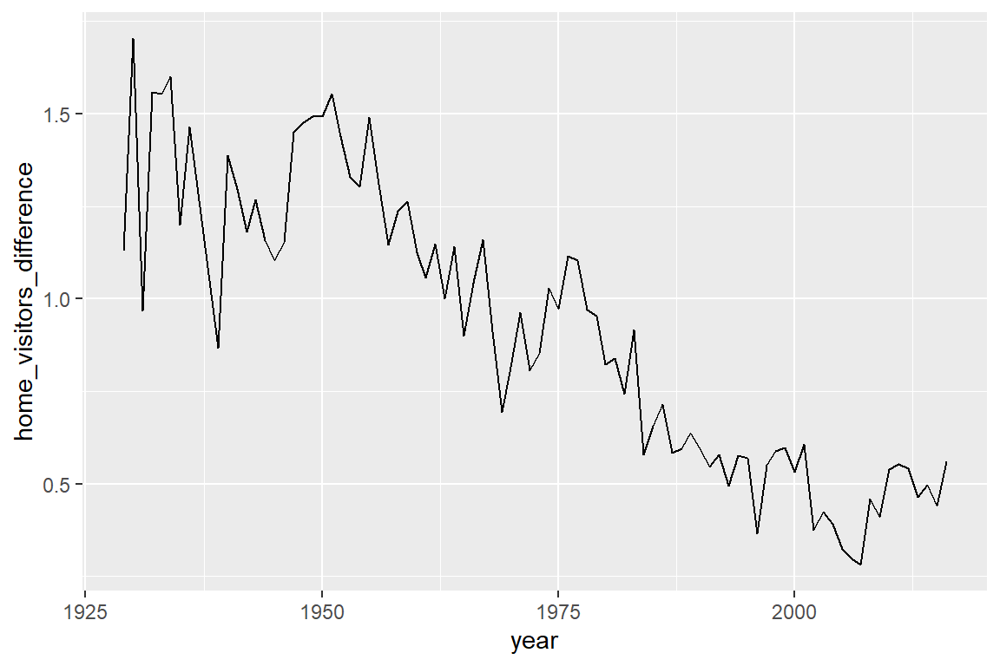

library(tidyverse)
library(lubridate)
library(engsoccerdata)5 Researching Spanish soccer data
NSC-R Tidy Tuesday March 2022
5.1 Introduction
Sports in general and football (soccer) in particular provides a sheer endless source of open data that can be explored at various levels (player, team, match, competition) and from various perspectives. In this workshop Wim Bernasco uses open data about football borrowed from a GitHub repository maintained by James Curley (James P. Curley (2016). More information here (Bernasco, 2022)
[1^]Wim Bernasco, Franziska Yasrebi-de Kom provided fertile suggestions on code and comments
5.2 Packages and data
Install packages, the admin required to get going
#install.packages('tidyverse')
#install.packages('lubridate')
#install.packages('devtools')
#library(devtools)
#install_github("jalapic/engsoccerdata")Load libraries
engsoccerdata is a package that includes data. Let us fist see what data are included (list the data in this package).
data(package="engsoccerdata") If you like sports data, checkout for free datasets
5.3 Exploration
What type of dataset is spain? I hope a data.frame.
spain |> class()[1] "data.frame"Great, it is a data.frame
What are the names of the variables. I hope they are self-explanatory.
spain |> names() [1] "Date" "Season" "home" "visitor" "HT" "FT" "hgoal"
[8] "vgoal" "tier" "round" "group" "notes" Let us peek into the data.
spain |> glimpse()Rows: 23,915
Columns: 12
$ Date <chr> "1929-02-10", "1929-02-10", "1929-02-10", "1929-02-10", "1929-~
$ Season <dbl> 1928, 1928, 1928, 1928, 1928, 1928, 1928, 1928, 1928, 1928, 19~
$ home <chr> "Arenas de Getxo", "Espanyol Barcelona", "Real Madrid", "Real ~
$ visitor <chr> "Atletico Madrid", "Real Union", "CE Europa", "Athletic Bilbao~
$ HT <chr> "0-2", "1-0", "0-0", "1-1", "0-0", "0-1", "3-0", "0-3", "0-1",~
$ FT <chr> "2-3", "3-2", "5-0", "1-1", "0-2", "1-2", "9-0", "0-3", "3-1",~
$ hgoal <dbl> 2, 3, 5, 1, 0, 1, 9, 0, 3, 5, 3, 3, 1, 0, 2, 1, 2, 3, 2, 2, 3,~
$ vgoal <dbl> 3, 2, 0, 1, 2, 2, 0, 3, 1, 2, 0, 1, 1, 4, 1, 2, 1, 0, 2, 0, 3,~
$ tier <dbl> 1, 1, 1, 1, 1, 1, 1, 1, 1, 1, 1, 1, 1, 1, 1, 1, 1, 1, 1, 1, 1,~
$ round <chr> "league", "league", "league", "league", "league", "league", "l~
$ group <chr> NA, NA, NA, NA, NA, NA, NA, NA, NA, NA, NA, NA, NA, NA, NA, NA~
$ notes <chr> NA, NA, NA, NA, NA, NA, NA, NA, NA, NA, NA, NA, NA, NA, NA, NA~You should see something like this:
# Rows: 25,435
# Columns: 12
# $ Date <date> 1929-02-10, 1929-02-10, 1929-02-10, 1929-02-10, 1929-02-12, 1929-02-~
# $ Season <dbl> 1928, 1928, 1928, 1928, 1928, 1928, 1928, 1928, 1928, 1928, 1928, 192~
# $ home <chr> "Arenas de Getxo"This is much more intuitive, but it only works interactively/ Try it out yourself, but do not include the View function in your script
spain |> View()Alternatively, a quick look at the first 10 rows.
spain |>
select(Date, home, visitor, FT) |>
head(n = 10) Date home visitor FT
1 1929-02-10 Arenas de Getxo Atletico Madrid 2-3
2 1929-02-10 Espanyol Barcelona Real Union 3-2
3 1929-02-10 Real Madrid CE Europa 5-0
4 1929-02-10 Real Sociedad Athletic Bilbao 1-1
5 1929-02-12 Racing Santander FC Barcelona 0-2
6 1929-02-17 FC Barcelona Real Madrid 1-2
7 1929-02-17 Athletic Bilbao Espanyol Barcelona 9-0
8 1929-02-17 Atletico Madrid Real Sociedad 0-3
9 1929-02-17 Real Union Racing Santander 3-1
10 1929-02-17 CE Europa Arenas de Getxo 5-2Let us look at frequencies of some variables.
How many teams?
spain |> count(home) home n
1 AD Almeria 34
2 Albacete 135
3 Arenas de Getxo 65
4 Athletic Bilbao 1362
5 Atletico Madrid 1288
6 Atletico Tetuan 15
7 Burgos CF 102
8 CA Osasuna 639
9 CD Alaves 171
10 CD Alcoyano 54
11 CD Castellon 167
12 CD Condal 15
13 CD Leonesa 15
14 CD Logrones 173
15 CD Malaga 323
16 CD Numancia 76
17 CD Tenerife 247
18 CE Europa 27
19 CE Sabadell 213
20 CF Extremadura 40
21 CP Merida 40
22 Cadiz CF 223
23 Celta Vigo 830
24 Cordoba CF 141
25 Deportivo La Coruna 746
26 Elche CF 339
27 Espanyol Barcelona 1294
28 FC Barcelona 1362
29 Getafe CF 228
30 Gimnastic 58
31 Granada CF 352
32 Hercules CF 314
33 Levante UD 201
34 Malaga CF 285
35 Pontevedra CF 90
36 RCD Mallorca 494
37 Racing Santander 713
38 Rayo Vallecano 321
39 Real Betis 845
40 Real Burgos 57
41 Real Jaen 45
42 Real Madrid 1362
43 Real Murcia 293
44 Real Oviedo 596
45 Real Sociedad 1132
46 Real Union 36
47 Real Valladolid 733
48 Real Zaragoza 993
49 Recreativo Huelva 93
50 SD Compostela 80
51 SD Eibar 38
52 Sevilla FC 1185
53 Sporting Gijon 710
54 UD Almeria 114
55 UD Las Palmas 529
56 UD Salamanca 212
57 UE Lleida 34
58 Valencia CF 1313
59 Villarreal CF 304
60 Xerez CD 19Frequencies of variable-combinations
How many times did team A host team B? (Results not shown here, output=false, because of length)
spain |> count(home, visitor)Frequencies of match outcomes
spain |> count(hgoal, vgoal) hgoal vgoal n
1 0 0 1811
2 0 1 1320
3 0 2 742
4 0 3 299
5 0 4 117
6 0 5 30
7 0 6 12
8 0 7 4
9 0 8 4
10 1 0 2815
11 1 1 2570
12 1 2 1168
13 1 3 431
14 1 4 155
15 1 5 58
16 1 6 11
17 1 7 2
18 1 8 1
19 2 0 2039
20 2 1 2228
21 2 2 1035
22 2 3 357
23 2 4 135
24 2 5 35
25 2 6 6
26 2 7 2
27 2 8 2
28 3 0 1196
29 3 1 1262
30 3 2 652
31 3 3 218
32 3 4 47
33 3 5 14
34 3 6 6
35 3 8 1
36 4 0 643
37 4 1 669
38 4 2 325
39 4 3 127
40 4 4 28
41 4 5 8
42 4 6 2
43 4 7 1
44 5 0 268
45 5 1 288
46 5 2 149
47 5 3 47
48 5 4 22
49 5 5 2
50 5 6 1
51 6 0 110
52 6 1 116
53 6 2 67
54 6 3 19
55 6 4 7
56 6 6 1
57 7 0 54
58 7 1 48
59 7 2 23
60 7 3 11
61 7 4 1
62 7 5 1
63 8 0 21
64 8 1 20
65 8 2 10
66 8 3 6
67 9 0 12
68 9 1 5
69 9 2 2
70 9 3 1
71 9 4 1
72 9 5 1
73 10 0 3
74 10 1 5
75 10 2 1
76 10 3 1
77 11 1 1
78 11 2 1
79 12 1 1Same, but using the combined FT variable.
spain |> count(FT) FT n
1 0-0 1811
2 0-1 1320
3 0-2 742
4 0-3 299
5 0-4 117
6 0-5 30
7 0-6 12
8 0-7 4
9 0-8 4
10 1-0 2815
11 1-1 2570
12 1-2 1168
13 1-3 431
14 1-4 155
15 1-5 58
16 1-6 11
17 1-7 2
18 1-8 1
19 10-0 3
20 10-1 5
21 10-2 1
22 10-3 1
23 11-1 1
24 11-2 1
25 12-1 1
26 2-0 2039
27 2-1 2228
28 2-2 1035
29 2-3 357
30 2-4 135
31 2-5 35
32 2-6 6
33 2-7 2
34 2-8 2
35 3-0 1196
36 3-1 1262
37 3-2 652
38 3-3 218
39 3-4 47
40 3-5 14
41 3-6 6
42 3-8 1
43 4-0 643
44 4-1 669
45 4-2 325
46 4-3 127
47 4-4 28
48 4-5 8
49 4-6 2
50 4-7 1
51 5-0 268
52 5-1 288
53 5-2 149
54 5-3 47
55 5-4 22
56 5-5 2
57 5-6 1
58 6-0 110
59 6-1 116
60 6-2 67
61 6-3 19
62 6-4 7
63 6-6 1
64 7-0 54
65 7-1 48
66 7-2 23
67 7-3 11
68 7-4 1
69 7-5 1
70 8-0 21
71 8-1 20
72 8-2 10
73 8-3 6
74 9-0 12
75 9-1 5
76 9-2 2
77 9-3 1
78 9-4 1
79 9-5 1Frequencies of a sum (total goals in match)
spain |> count(hgoal + vgoal) hgoal + vgoal n
1 0 1811
2 1 4135
3 2 5351
4 3 4891
5 4 3488
6 5 2131
7 6 1146
8 7 543
9 8 237
10 9 113
11 10 42
12 11 17
13 12 5
14 13 4
15 14 1Frequencies of function work as well (year of match date).
spain |> count(year(Date)) year(Date) n
1 1929 115
2 1930 84
3 1931 91
4 1932 95
5 1933 110
6 1934 75
7 1935 150
8 1936 84
9 1939 30
10 1940 186
11 1941 139
12 1942 182
13 1943 175
14 1944 189
15 1945 182
16 1946 189
17 1947 175
18 1948 189
19 1949 189
20 1950 205
21 1951 240
22 1952 216
23 1953 256
24 1954 248
25 1955 216
26 1956 264
27 1957 232
28 1958 240
29 1959 240
30 1960 232
31 1961 264
32 1962 216
33 1963 239
34 1964 249
35 1965 240
36 1966 233
37 1967 239
38 1968 248
39 1969 248
40 1970 232
41 1971 246
42 1972 324
43 1973 306
44 1974 288
45 1975 315
46 1976 306
47 1977 297
48 1978 306
49 1979 306
50 1980 332
51 1981 306
52 1982 297
53 1983 310
54 1984 320
55 1985 306
56 1986 324
57 1987 366
58 1988 379
59 1989 401
60 1990 368
61 1991 371
62 1992 380
63 1993 391
64 1994 370
65 1995 428
66 1996 451
67 1997 454
68 1998 350
69 1999 401
70 2000 369
71 2001 400
72 2002 350
73 2003 401
74 2004 379
75 2005 381
76 2006 369
77 2007 391
78 2008 370
79 2009 370
80 2010 390
81 2011 380
82 2012 390
83 2013 380
84 2014 369
85 2015 390
86 2016 211Note: this works because R knows that ‘Date’ is a date
How can you know that R knows? Either: (1) type ‘spain %>% glimpse’ and observe that the class of ‘Date’ is a
(2) type ‘spain %>% pull(Date) %>% class()’ to obtain that information (pull returns a single variable from a dataframe)
spain |> pull(Date) |> class()[1] "character"What is this ‘round’ variable?
spain |> count(round) round n
1 league 23825
2 phase2 90Apparently 90 matches (‘phase2’) are not regular La Liga matches. In subsequent analyses, we will not use these 90 matches. So we create a new dataframe excluding these 90 matches.
spain_league <-
spain |>
filter(round=="league")We will try to answer a couple of simple questions:
1. Is it true that there are less goals today than in earlier days?
2. Is the number of goals related to the season of the year?
3. Is playing home really an advantage?
4. If so, has this advantage changed over time?
- Less goals today?
Key variables, just to check we have the variables we need and they look OK. Just list the first 10 cases
spain_league |>
select(Date, home, visitor, hgoal, vgoal) |>
head(n=10) Date home visitor hgoal vgoal
1 1929-02-10 Arenas de Getxo Atletico Madrid 2 3
2 1929-02-10 Espanyol Barcelona Real Union 3 2
3 1929-02-10 Real Madrid CE Europa 5 0
4 1929-02-10 Real Sociedad Athletic Bilbao 1 1
5 1929-02-12 Racing Santander FC Barcelona 0 2
6 1929-02-17 FC Barcelona Real Madrid 1 2
7 1929-02-17 Athletic Bilbao Espanyol Barcelona 9 0
8 1929-02-17 Atletico Madrid Real Sociedad 0 3
9 1929-02-17 Real Union Racing Santander 3 1
10 1929-02-17 CE Europa Arenas de Getxo 5 2Same, but this time a random sample of rows.
spain_league |>
select(Date, home, visitor, hgoal, vgoal) |>
slice_sample(n=10) Date home visitor hgoal vgoal
1 1955-09-25 Real Murcia FC Barcelona 0 1
2 1962-12-23 Real Betis RCD Mallorca 2 1
3 1948-03-07 Atletico Madrid FC Barcelona 2 2
4 1956-11-25 FC Barcelona Celta Vigo 4 1
5 2001-10-28 CD Alaves UD Las Palmas 1 0
6 1967-12-31 Athletic Bilbao Real Betis 8 0
7 1985-10-27 UD Las Palmas Espanyol Barcelona 3 1
8 1993-01-24 Cadiz CF CD Logrones 2 2
9 1992-09-19 CD Logrones Celta Vigo 0 1
10 1976-12-19 Valencia CF Burgos CF 3 1Once more, number of goals in match
spain_league |> count(hgoal + vgoal) hgoal + vgoal n
1 0 1807
2 1 4122
3 2 5330
4 3 4870
5 4 3472
6 5 2120
7 6 1142
8 7 543
9 8 237
10 9 113
11 10 42
12 11 17
13 12 5
14 13 4
15 14 1How did the number of goals per match develop over time?
spain_league |>
# number of goals per match, and year of the match
mutate(goals = hgoal+vgoal,
year = year(Date)
) |>
ggplot() +
geom_point(aes(x=year, y=goals))Oeps, this was not what I had in mind. I need to aggregate first! The ‘group_by’ function does group the data per year, so that we can then use the summarize function to obtain the mean goals scored per match (mean_goals_pm) per year.
spain_league |>
mutate(goals = hgoal + vgoal,
year = year(Date)
) |>
group_by(year) |>
summarize(mean_goals_pm = mean(goals)) |>
ggplot() +
geom_line(aes(x=year, y=mean_goals_pm))Yes, there were more goals back in the old days (before 1950).
Funny pattern. What about England? Do we have the same variables (yes!)
england |> names() [1] "Date" "Season" "home" "visitor" "FT" "hgoal"
[7] "vgoal" "division" "tier" "totgoal" "goaldif" "result" england |>
# number of goals per match, and year of the match
mutate(goals = hgoal+vgoal,
year = year(Date)
) |>
group_by(year) |>
summarize(mean_goals_pm = mean(goals)) |>
ggplot() +
geom_line(aes(x=year, y=mean_goals_pm))England is were the game was invented (they say), so they have a longer history going back to 1888. Let us now combine England and Spain.
spain_series <-
spain_league |>
mutate(goals = hgoal+vgoal,
year = year(Date)
) |>
group_by(year) |>
summarize(mean_goals_pm = mean(goals),
# Define a constant for Spain
country = "Spain")What des this look like? Do it yourself: View(spain_series).
england_series <-
england |>
# number of goals per match, and year of the match
mutate(goals = hgoal+vgoal,
year = year(Date)
) |>
group_by(year) |>
summarize(mean_goals_pm = mean(goals),
# Define a constant for England
country = "England")Stack both datasets on top of each other
series <- bind_rows(spain_series, england_series)Take a look yourself (note that England started 1888, Spain in 1929)
series |>
arrange(year, country) |>
View()
Plot development in Spain and England in the same graph
series |>
ggplot() +
geom_line(aes(x=year, y=mean_goals_pm, color=country))
Back to Spain
- Is the number of goals related to the season of the year? We use month of the year as a season indicator.
spain_league |>
# number of goals per match, and year of the match
mutate(goals = hgoal+vgoal,
month = month(Date)
) |>
group_by(month) |>
summarize(mean_goals_pm = mean(goals)) |>
ggplot() +
geom_point(aes(x=month, y=mean_goals_pm)) +
scale_x_continuous(breaks=1:12)Let us check how many we have in summer (June-August, numbers of games)
spain_league |>
mutate(goals = hgoal+vgoal,
month = month(Date)
) |>
group_by(month) |>
# This is how we count nr of rows (matches) per month
summarize(number_of_matches = n()) |>
ggplot() +
geom_point(aes(x=month, y=number_of_matches)) +
# this gives us a scale nicely labeled 1..12
scale_x_continuous(breaks=1:12)Let us ignore June-August
spain_league |>
mutate(goals = hgoal+vgoal,
month = month(Date)
) |>
# this removes months 6,7 and 8 (June, July, August)
# the exclamation mark (!) means NOT , i.e.
# !x means the same as (x == FALSE)
filter(!(month %in% c(6:8))) |>
group_by(month) |>
# This is how we count nr of rows (matches) per month
summarize(number_of_matches = n()) |>
ggplot() +
geom_point(aes(x=month, y=number_of_matches)) +
scale_x_continuous(breaks=1:12)However, the differences are pretty small. This becomes clear when we set the scale of the Y axis
spain_league |>
mutate(goals = hgoal+vgoal,
month = month(Date) ) |>
filter(!(month %in% c(6:8))) |>
group_by(month) |>
summarize(mean_goals_pm = mean(goals)) |>
ggplot() +
geom_point(aes(x=month, y=mean_goals_pm)) +
scale_x_continuous(breaks=1:12) +
# Y axis range is between 0 and 3 goals
ylim(0,3)Or as a bar chart
spain_league |>
mutate(goals = hgoal+vgoal,
month = month(Date) ) |>
filter(!(month %in% c(6:8))) |>
group_by(month) |>
summarize(mean_goals_pm = mean(goals)) |>
ggplot() +
# geom_col rather than geom_point
geom_col(aes(x=month, y=mean_goals_pm)) +
scale_x_continuous(breaks=1:12) +
# Y axis range is between 0 and 3 goals
ylim(0,3)The differences are negligible!
- Is playing home really an advantage?
Let us create a custom version of the dataset for this analysis
spain_extended <- spain_league |>
# Adding '-' in front of a variable means 'throw it away'
# or, in other words, 'do not select it'. If you use the -
# in select, variables not mentioned are retained.
select( -Season, -HT, -FT, -tier, -round, -group, -notes ) |>
mutate(goals = hgoal+vgoal,
year = year(Date),
month = month(Date),
# Continuous version : difference in goals
goals_difference = hgoal - vgoal,
# Discrete version: home wins, visitors win, equal split
result_discrete = case_when(goals_difference > 0 ~ "Hosts wins",
goals_difference < 0 ~ "Visitors win",
goals_difference == 0 ~ "Equal split") )Frequency of wins, losses and equal splits
spain_extended |> count(result_discrete) result_discrete n
1 Equal split 5644
2 Hosts wins 13227
3 Visitors win 4954Intermezzo (added after the workshop meeting)
You may be familiar with the ‘classic R’ table function to create this table (printed horizontally):
table(spain_extended$result_discrete)
Equal split Hosts wins Visitors win
5644 13227 4954 If you prefer the classic table, the below will NOT work because there must always be a function after the pipe symbol (|>) as the pipe symbol means “whatever” is returned by the function before |> will become the first argument of the function after the |>.And ‘result_discrete’ is not a function, but an object.
spain_extended |> result_discrete |> table() But this will work, because pull is a function that returns the variable result_discrete as a vector):
spain_extended |> pull(result_discrete) |> table()
Equal split Hosts wins Visitors win
5644 13227 4954 Frequency table with proportions.
spain_extended |>
group_by(result_discrete) |>
summarize(frequency = n()) |>
mutate(proportion = frequency / sum(frequency))# A tibble: 3 x 3
result_discrete frequency proportion
<chr> <int> <dbl>
1 Equal split 5644 0.237
2 Hosts wins 13227 0.555
3 Visitors win 4954 0.208Same thing, but now as a bar chart.
spain_extended |>
group_by(result_discrete) |>
summarize(frequency = n()) |>
mutate(proportion = frequency / sum(frequency)) |>
ggplot() +
geom_col(aes(x=result_discrete, y=proportion), fill="blue")What does goal difference home-visitors look like
Key descriptive variables.
spain_extended |>
select(goals_difference) |>
summary() goals_difference
Min. :-8.000
1st Qu.: 0.000
Median : 1.000
Mean : 0.805
3rd Qu.: 2.000
Max. :11.000 Mean: On average, home teams score .78 goals more per match than visitors.
Median: In half of the matches, the home team scores more than 1 goal more than the visitors
Let us make a box plot
spain_extended |>
ggplot() +
geom_boxplot(aes(x=goals_difference)) +
scale_x_continuous(breaks = seq(-10, 10,1))Home teams clearly have an advantage!
- Has this advantage changed over time?
Proportions of matches won, lost, equal split
spain_extended |>
group_by(year, result_discrete) |>
summarize(frequency = n()) |>
mutate(proportion = frequency / sum(frequency)) |>
ggplot() +
geom_line(aes(x=year, y=proportion, color=result_discrete))Goal count differences between home team and visitors
spain_extended |>
group_by(year) |>
summarize(home_visitors_difference = mean(goals_difference)) |>
ggplot() +
geom_line(aes(x=year, y=home_visitors_difference))
Both graphs strongly suggest that home advantage decreased over the past century.
5.4 References
Bernasco, W. (2022, March). NSC-R Workshops: NSC-R Tidy Tuesday. NSCR. Retrieved from https://nscrweb.netlify.app/posts/2022-03-22-nsc-r-tidy-tuesday/